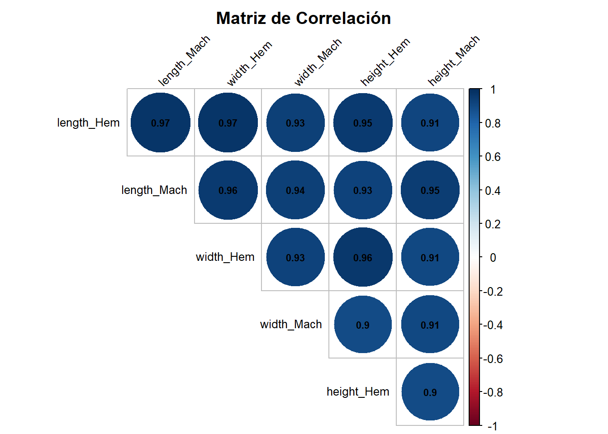
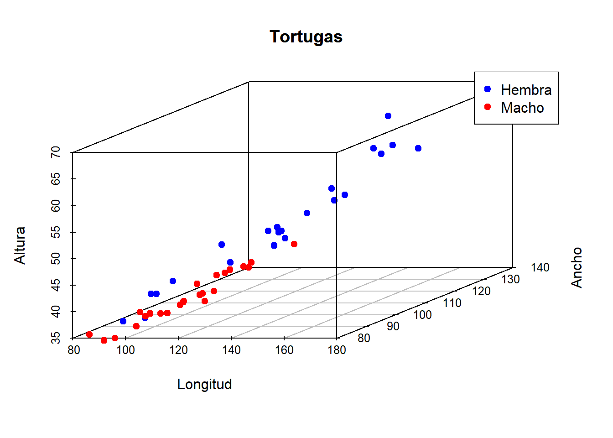
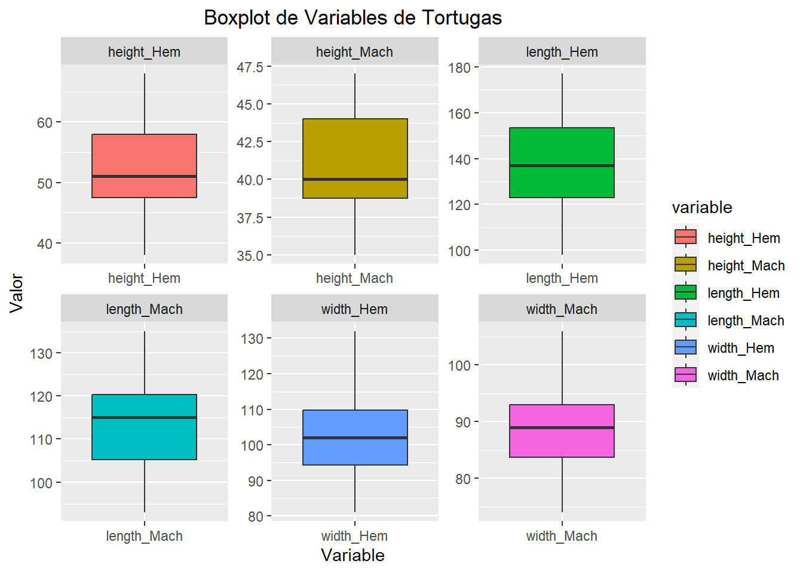
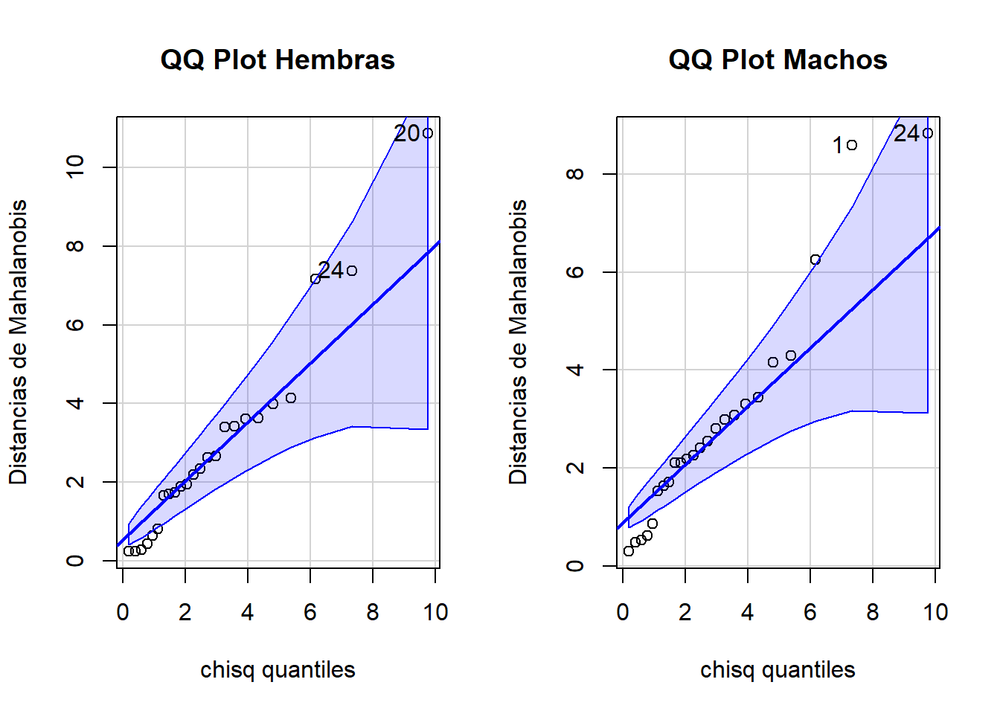
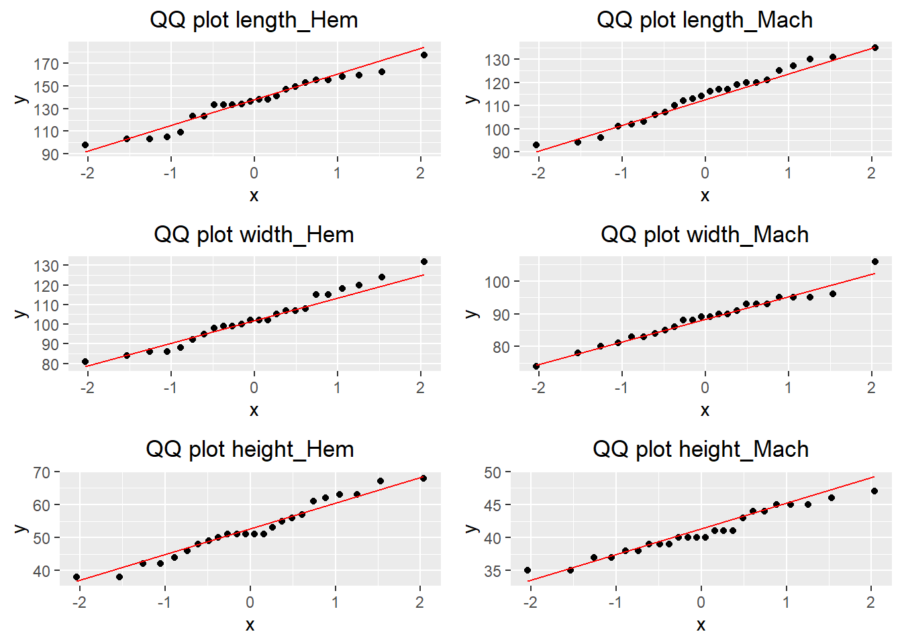

3 Distribution of Tortoises and Freshwater Turtles of the Colombian Caribbean
3.1 Análisis exploratorio. Distribution of Tortoises and Freshwater Turtles
# Cargamos los datos
tortugas <- data.frame(
length_Hem = c(98, 103, 103, 105, 109, 123, 123, 133, 133, 133, 134, 136, 138,
138, 141, 147, 149, 153, 155, 155, 158, 159, 162, 177),
length_Mach = c(93, 94, 96, 101, 102, 103, 110, 106, 107, 112, 113, 114, 116, 117,
117, 119, 120, 120, 121, 125, 127, 130, 131, 135),
width_Hem = c(81, 84, 86, 86, 88, 92, 95, 99, 102, 102, 100, 102, 98, 99, 105,
108, 107, 107, 115, 120, 115, 118, 124, 132),
width_Mach = c(74, 78, 80, 84, 85, 81, 83, 83, 88, 89, 88, 86, 90, 90, 91, 93,
89, 93, 95, 93, 96, 95, 95, 106),
height_Hem = c(38, 38, 42, 42, 44, 50, 46, 51, 51, 51, 48, 49, 51, 51, 53, 57,
55, 56, 63, 68, 62, 63, 61, 67),
height_Mach = c(37, 35, 35, 39, 38, 37, 39, 39, 38, 40, 40, 40, 43, 41, 41, 41,
40, 44, 44, 45, 45, 45, 46, 47)
)
# Resumen de los datos
descr(tortugas)Descriptive Statistics
tortugas
N: 24
height_Hem height_Mach length_Hem length_Mach width_Hem width_Mach
----------------- ------------ ------------- ------------ ------------- ----------- ------------
Mean 52.38 40.79 136.04 113.71 102.71 88.54
Std.Dev 8.54 3.41 21.25 11.75 13.26 6.95
Min 38.00 35.00 98.00 93.00 81.00 74.00
Q1 47.00 38.50 123.00 104.50 93.50 83.50
Median 51.00 40.00 137.00 115.00 102.00 89.00
Q3 59.00 44.00 154.00 120.50 111.50 93.00
Max 68.00 47.00 177.00 135.00 132.00 106.00
MAD 8.15 3.71 22.24 12.60 12.60 6.67
IQR 10.50 5.25 30.50 15.00 15.50 9.25
CV 0.16 0.08 0.16 0.10 0.13 0.08
Skewness 0.13 0.13 -0.22 -0.10 0.29 0.13
SE.Skewness 0.47 0.47 0.47 0.47 0.47 0.47
Kurtosis -0.95 -1.09 -0.92 -1.00 -0.71 0.05
N.Valid 24.00 24.00 24.00 24.00 24.00 24.00
Pct.Valid 100.00 100.00 100.00 100.00 100.00 100.00Al considerar los diversos resultados, podemos hacer comparativas entre las tres medidas presentadas:
Largo: podemos apreciar que al tomar la medida del largo de las tortugas, las hembras son la que en promedio presentan mayor distancia, sin embargo, tambien son las que mayor rango tienen, y presentan una desviación de 21.25, 9.5 unidades mayor que la desviación de los machos, donde se aprecia que el rango de los machos no es tan grande como el de las hembras.
Alto: Se observa que al igual que en el caso anterior, las hembras poseen en promedio mayores distancias registradas que los hombres, algo que también se evidencia en la deviación estándar y también presentan un mayor rango que en el caso de los hombres.
Ancho: Las apreciaciones anteriores, obtienen un comportamiento similar en este caso, pues son las mujeres las que en promedio mayor distancia poseen, mayor desviación y rango tienen en comparación con los machos observados.
Estas observaciones preliminarmente sugieren que las tortugas hembras se caracterizan por ser más grandes que los machos.
Por otro lado al observar la asimetría se puede apreciar que de las 3 variables (observándolo de manera general) la medida de la longitud es negativa, siendo cercana a cero, indicando una leve concentración de los ladtos al lado derecho de la mediana, sin embargo esta cercania al cero, también da indicios de una aproximación a una simetría por parte de la variable. De manera similar ocurre con las otras dos variables tanto para machos como hembras, solo que los datos tienden a concentrarse levemente al lado izquierdo de la mediana, pero con valores lo suficientemente cercanos a cero para considerar que también se aproximan a tener simetría en su distribución.
Ahora bien, sobre la curtosis de los datos se apreciar que esta es negativa en su mayoría, un hecho que solo difiere en la variable de anchura en el macho; sin embargo, se puede apreciar que sus valores son bastantes próximos a cero, lo que sugiere desde un punto preliminar que las variables se aproximan a una distribución normal.
# Calcular matriz de correlación
correlation_matrix <- cor(tortugas)
corrplot(correlation_matrix, method = "circle", type = "upper",
tl.col = "black", tl.srt = 45, diag = FALSE,
addCoef.col = "black", number.cex = 0.7,
tl.cex = 0.8, cl.cex = 0.8, mar = c(0,0,2,0),
main = "Matriz de Correlación")
3.1.1 Dispersograma de los datos.
Realice un dispersograma de los datos. En el dispersograma use puntos de acuerdo con el color de la especie por sexo. ¿Considera que el color en realidad diferencia las especies? Justifique su respuesta.
attach(tortugas)
s3d_hembra <- scatterplot3d(x = length_Hem, y = width_Hem, z = height_Hem,
color = "blue", pch = 19, type = "p", main = "Tortugas",
xlab = "Longitud", ylab = "Ancho", zlab = "Altura")
s3d_hembra$points3d(x = length_Mach, y = width_Mach, z = height_Mach,
col = "red", pch = 19)
legend("topright", legend = c("Hembra", "Macho"), col = c("blue", "red"), pch = 19)
title(main = "Tortugas")
3.1.2 Boxplot adecuado. Comente los resultados.
# Convertir el marco de datos a un formato largo (tidy data)
tortugas_long <- pivot_longer(tortugas, cols = everything(),
names_to = "variable", values_to = "valor")
ggplot(tortugas_long, aes(x = variable, y = valor, fill = variable)) +
geom_boxplot() +
facet_wrap(~ variable, scales = "free") +
xlab("Variable") +
ylab("Valor") +
ggtitle("Boxplot de Variables de Tortugas") +
theme(plot.title = element_text(hjust = 0.5))
3.1.3 Distancia de Mahalanobis entre los centroides de los dos sexos.
SxH <- cov(tortugas[,c(1,3,5)])
SxM <- cov(tortugas[,c(2,4,6)])
mahalanobisH <- mahalanobis(tortugas[,c(1,3,5)], colMeans(tortugas[,c(1,3,5)]), SxH)
mahalanobisM <- mahalanobis(tortugas[,c(2,4,6)], colMeans(tortugas[,c(2,4,6)]), SxM)
par(mfrow = c(1,2))
qqPlot(mahalanobisH, distribution ="chisq", df = 3 , main ="QQ Plot Hembras", ylab ="", las =0)[1] 20 24title(ylab =" Distancias de Mahalanobis ")
qqPlot(mahalanobisM, distribution ="chisq", df = 3 , main ="QQ Plot Machos", ylab ="", las =0)[1] 24 1
3.1.4 Test de Kolmogorov-Smirnov y Shapiro-Wilk.
En este apartado, tengase en cuenta el siguiente juego de hipótesis para contrastar la normalidad marginal del conjunto de datos para la prueba de Kolmogorov-Smirnov (KS) y Shapiro-Wilk (SW).
- H\(_0\): los datos provienen de una distribución normal
- H\(_1\): los datos no provienen de una distribución normal
# funcion para pruebas de normalidad para cada columna individual
results_KS <- lapply(tortugas, function(x) {
ks.test(x, "pnorm", mean = mean(x), sd = sd(x))
})
results_SW <- lapply(tortugas, shapiro.test)
# Combinar los resultados en un marco de datos
results_df <- data.frame(
Variable = names(tortugas),
KS_p_value = sapply(results_KS, function(x) x$p.value),
SW_p_value = sapply(results_SW, function(x) x$p.value)
)
rownames(results_df) <- NULL
results_df %>% kable() | Variable | KS_p_value | SW_p_value |
|---|---|---|
| length_Hem | 0.6409653 | 0.3458763 |
| length_Mach | 0.9987789 | 0.7910622 |
| width_Hem | 0.9553171 | 0.7440934 |
| width_Mach | 0.9705143 | 0.8353357 |
| height_Hem | 0.6751271 | 0.4921829 |
| height_Mach | 0.7157577 | 0.3509175 |
Con la información de la tabla anterior, se observa que los p valores tiene valores altos para cada prueba, que con un \(\alpha = 0.05\), se obtiene que los p-valores > \(\alpha\) por lo tanto no se rechaza H\(_0\) y se concluye que los datos marginalmente provienen de una distribución normal. Cabe mencionar que para ambos tipos de test esto se ratifica.
3.1.5 Gráfico QQplot multinormalidad de los datos.
La figura que se muestra a continuación pretende analizar la normalidad marginal del conjunto de datos tortugas. La idea principal es que los puntos se encuentren sobre la linea de referencia (color rojo) para que su comportamiento se considere normal. Por lo tanto, se encuentra que la normalidad parece cumplirse para cada uno de las variables, lo cual concuerda con los test de normalidad realizados en el inciso anterio
# Función para crear QQ plot
create_qqplot <- function(data, col_name) {
ggplot(data, aes(sample = .data[[col_name]])) +
geom_qq() +
geom_qq_line(color = "red") +
labs(title = paste("QQ plot", col_name)) +
theme(plot.title = element_text(hjust = 0.5))
}
# Crear QQ plot para cada columna
qqplots <- lapply(names(tortugas), function(col) {
create_qqplot(tortugas, col)
})
# Mostrar los QQ plots en la misma ventana
grid.arrange(grobs = qqplots, ncol = 2)
3.1.6 Test de Shapiro-Wilk multivariado y Mardia
A continuación realizaremos test de multinormalidad para cada grupo de tortugas (machos y hembras) usando los test de shapiro-wilk multivariado y el test de Mardia analizando el test de Anderson -Darling. Para el contraste de la shapiro-wilk téngase en cuenta el juego de hipótesis expuesto para la shapiro-wilk univariada
Shapiro-Wilk normality test
data: Z
W = 0.88576, p-value = 0.01087
Shapiro-Wilk normality test
data: Z
W = 0.94247, p-value = 0.1851Teniendo en cuenta los p-valores para cada uno de los grupos y un \(\alpha = 0.05\), se concluye que hay evidencia significativa para rechzar la multinormalidad en los datos del grupo de las hembras dado que el p-valor < \(\alpha\). Contrario a lo que sucede con las tortugas machos, cuyo p-valor > \(\alpha\) lo que indica que hay evidencia significativa para aceptar la multinormalidad para este grupo.
# Resultados de la prueba de Mardia
mardiaH <- mvn(data = tortugas[,c(1,3,5)], mvnTest = "mardia"); mardiaH[c(1,2)]$multivariateNormality
Test Statistic p value Result
1 Mardia Skewness 19.2915141939567 0.0367124740909937 NO
2 Mardia Kurtosis 0.356039059194154 0.721811314232731 YES
3 MVN <NA> <NA> NO
$univariateNormality
Test Variable Statistic p value Normality
1 Anderson-Darling length_Hem 0.4283 0.2863 YES
2 Anderson-Darling width_Hem 0.2367 0.7609 YES
3 Anderson-Darling height_Hem 0.3218 0.5099 YES $multivariateNormality
Test Statistic p value Result
1 Mardia Skewness 5.14510497861245 0.881276336058678 YES
2 Mardia Kurtosis -0.291653421791725 0.770551625535058 YES
3 MVN <NA> <NA> YES
$univariateNormality
Test Variable Statistic p value Normality
1 Anderson-Darling length_Mach 0.1771 0.9105 YES
2 Anderson-Darling width_Mach 0.2374 0.7584 YES
3 Anderson-Darling height_Mach 0.4284 0.2862 YES Teniendo en cuenta el test de Mardia para cada grupo se observa lo siguiente:
Mardia Skewness: La estadística de asimetría de Mardia es 19.29 para las hembras y 5.14 para los machos, y el valor p asociado es 0.03 y 0.88, respecticamente. Lo que indica que hay evidencia suficiente para rechazar la hipótesis nula de asimetría multivariada para la hembras, mientras que para los machos no hay evidencia suficiente para rechazar.
Mardia Kurtosis: La estadística de curtosis de Mardia es de 0.35 para las hembras y -0.29 para los machos. Los valores p asociado a cada grupo es 0.72 y 0.77 respectivamente, lo que sugiere que no hay suficiente evidencia para rechazar la hipótesis nula de curtosis multivariada para ambos grupos.
En el test de Anderson-Darling muestra que existe evidencia significativa para no rechazar la normalidad marginal para las variables de cada grupo, dado que los p-valores > \(\alpha\).
3.1.7 Diferencias estadísticas fuertes entre dichos géneros.
Para esto realizaremosdos tipos de hipótesis: test de comparacion de matrizde varianzas y covarianzas y test de comparación de medias. Esto comparando los grupos machos y hembras. Para esto, realizaremos en primera instancia el test contrastar matriz de varianzas y covarianzas, con el siguiente juego de hipótesis:
- H\(_0\) : \(\mathbf{\Sigma}_1 - \mathbf{\Sigma}_2 = \mathbf{0}\).
- H\(_1\) : \(\mathbf{\Sigma}_1 - \mathbf{\Sigma}_2 \neq \mathbf{0}\).
Así, el proceso de juzgamiento esta dado a continuación:
testPobs <- function(..., alpha){
pobs <- list(...)
ns <- sapply(pobs, nrow)
p <- ncol(pobs[[1]])
q <- length(pobs)
df <- (1/2)*p*(p+1)*(q-1)
nui <- (ns-1)
nu <- sum(nui)
rho <- rho <- 1 - (((2*p^2+3*p-1)/(6*(p+1)*(q-1)))*(sum(1/nui) - 1/nu))
S <- list()
for (i in 1:length(pobs)){
S[[i]] <- cov(pobs[[i]])
}
x <- 0
for (i in 1:length(S)){
x1 <- nui[i]*S[[i]]
x <- x + x1
}
sp <- x/nu
logS <- sapply(S, function(s) determinant(s, log=TRUE)$mod[1])
logSP <- determinant(sp, log = TRUE)$mod[1]
logM <- rho*(sum(nui*logSP) - sum(nui*logS))
tab <- qchisq(alpha, df = df, lower.tail = FALSE)
p_value <- pchisq(logM, df, lower.tail = FALSE)
tabla <- data.frame('Valor Tab' = tab,
'Est. Prueba' = logM,
'p-value' = p_value)
row.names(tabla) <- c('Test Varianzas')
print(tabla)
}
testPobs(as.matrix(tortugas[, c(1, 3, 5)]), as.matrix(tortugas[, c(2, 4, 6)]), alpha = 0.05) Valor.Tab Est..Prueba p.value
Test Varianzas 12.59159 28.26133 8.388967e-05Teniendo en cuenta la información de la tabla anterior y definido un \(\alpha = 0.05\) se obtiene que el p-valor < \(\alpha\) por lo tanto se rechaza H\(_0\) y no se rechaza H\(_1\) lo que nos lleva a que existen diferencias significativas en la matriz de varianzas y covarianzas de las tortugas hembras y machos.
Considerando que existen diferencias significativas entre las matrices de varianzas y covarianzas de las tortugas hembras y machos y que el numero de tortugas observadas es igual para cada grupo, se propone comparar las medias de cada grupo usando el test de muestras paredas, con el siguiente juego de hipótesis:
Ho: \(\mathbf{\mu}_1 = \mathbf{\mu}_2\)
H1: \(\mathbf{\mu}_1 \neq \mathbf{\mu}_2\)
PareadasTest <- function(Pob1, Pob2){
n <- nrow(Pob1)
p <- ncol(Pob1)
distan <- (Pob1 - Pob2)
distanMean <- matrix(colMeans(distan))
Sd <- cov(distan)
T2 <- n*t(distanMean)%*%solve(Sd)%*%distanMean
T20 <- (T2/(n-1))*((n-p)/p)
P_value <- pf(T20, p, n-1, lower.tail = FALSE)
Quan <- qf(0.05, p, n-1, lower.tail = FALSE)
print(data.frame(T20 = T20, Cuantil = Quan, P_valor = P_value))
}
PareadasTest(tortugas[, c(1, 3, 5)], tortugas[, c(2, 4, 6)]) T20 Cuantil P_valor
1 35.43449 3.027998 8.59217e-09Teniendo en cuenta la información de la tabla anterior y definido un \(\alpha = 0.05\) se obtiene que el p-valor < \(\alpha\) por lo tanto se rechaza H\(_0\) y no se rechaza H\(_1\) lo que nos lleva a que existen diferencias significativas en las medias de las tortugas hembras y machos.